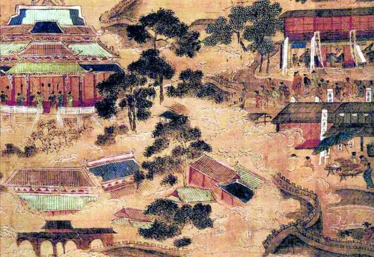
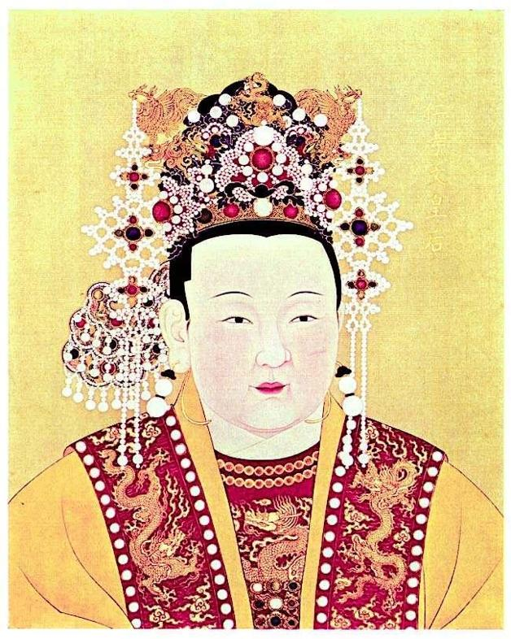
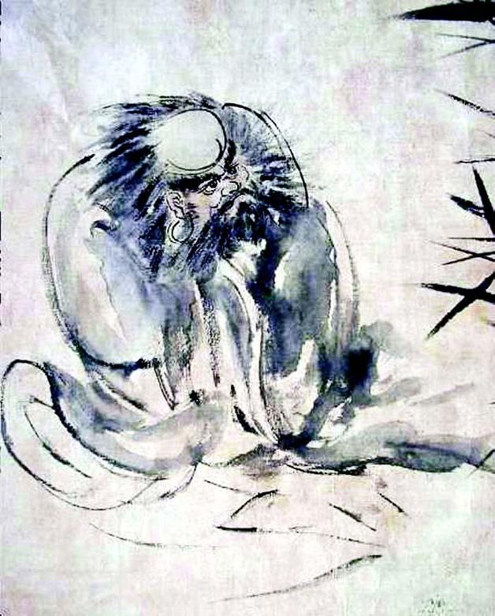

四
负责侦缉的忻城伯赵之龙所辖京营戎政衙门，起获大悲自造文簿九件。其中有“圣僧大悲和尚，为天下第一，至三十岁即成活佛”及受封齐王等语，还列有欺佛、泄露天机等十五款大罪。[12]俨若一方教主，无稽之至；略微靠谱的，可能是“三十岁即成活佛”一句，只是“活佛”两个字需要换成“疯癫”。
这些胡涂乱抹、一无足信的文字，便是本案全部物证。北镇抚司掌刑指挥佥事许世蕃以其上奏，得旨：
大悲妖言无忌。被擒之日，即有匿名文帖与相炤应。岂是风（疯）癫野僧？这审供未尽奸情，着拿送镇抚司，严刑密审具奏。钦此。[13]
一句话：不满意，发回重审。不满意的原因，一是我们已知的，大悲就擒前有公开谋反言论，现在以此为理由，驳回仅以其为疯癫的狱词。另一原因先前我们没有讲到，那是一个很奇怪的情节：大悲刚刚被捕，外面就有人给他投了一张匿名字条，而字条又恰恰落于官方之手。内容秘而不宣，各书无一有载，但推测必与“谋反”有关。换言之，审讯只得出“疯癫”的结论，这张字条却恰好可以推翻这个结论。
唯一的问题：不知真假。大悲是否真有同志与其串联？抑或根本没有这样的人，帖子纯属假造？
疑问也涉及那道圣旨。圣旨虽然假不了，但它与皇帝本人的关系却并非不可成疑。明朝自有内阁后，后者拟旨，然后经皇帝过目、批准，这最终的权力叫“批硃”。而随着越来越多皇帝“倦勤”，“批硃权”也早已旁落，常操近倖之手。这是明朝一个有名的顽症。眼下，朱由崧除了恰好是一个声色皇帝，同时还是一位弱势君主。所谓“圣旨”而不出自于他，这种情况根本不稀奇。
这道圣旨下来，案审被具体和明确了方向，即所谓掏出“奸情”。《鹿樵纪闻》记述，镇抚司提交的报告称：“臣等续奉旨严刑复讯，大悲复供云：‘潞王斋僧好道，施恩百姓，该与他坐正位。故六月中有户部申绍芳议保潞王，近又闻钱谦益在圣庙议保潞王。’”[14]复讯、复供字样，显示案情已被刻意操控和改写，并得到了期待的口供。潞王该“坐正位”，以及大臣中有人“议”此事，都是突破性收获。
《鹿樵纪闻》所述，是简化版。《甲乙事案》援叙较详，可以对照：
又奉有严刑密审具奏之旨，事关重大，臣等敢不细加研审。又将大悲、月光提出夹审。即问大悲：“拿你之日有匿名文帖，是谁写的。”悲云：“此帖我实不知。”臣又行敲审，彼说：“潞王施恩于百姓，人人服他，又斋僧好道，该与他做正位，封我为潞王。故悲于六月间有‘户部申（苏州人）议保潞王’等语。”臣问悲：“议保者都系何人？”悲云：“止将我知道的说出，其余不知是何名姓。”臣再三拶审，又说：“昨十一月二十日，闻有钱（亦苏州人）在圣庙内议保潞王等情。”臣又问同议者何人？悲云：“止知申、钱两家名字，余不知是谁。”臣又问：“议保如何行事？”悲云：“总之，在京各官，与潞府相为者少，都是马阁部的人。权柄在他手里，众人都怕他，不敢行。”臣又问：“与潞府相为各官是谁？”悲云：“止闻说有人，不知姓名，难以指实，不敢妄招。”臣再四刑审，全然不言，再无别情吐出。[15]
镇抚司官员的报告，其实写得很诚实。我们只须注意“敲审”、“再三拶审”、“再四刑审”三个关键词，就可复原“掏”出那些口供的过程。一言以蔽之，全部是毒刑的收获。上一次刑，得到一点口供；上得更重，口供就越发令人满意。一开始，拿出那个匿名文帖，大悲根本不知何物；末了，竟然引出了很具体的人名。那个姓申的，是户部右侍郎申绍芳；姓钱的，就是钱谦益。
笔者一度怀疑大悲吐出申、钱二人，系刑讯者授意。再推敲，又觉不像。负责拷问的官员，只是如狼似虎，尚无迹象显示他们预先知道什么阴谋。他们所写的报告，甚至有意抹去申绍芳、钱谦益的名讳，而注以“苏州人”、“亦苏州人”，态度谨慎，不想得罪什么人。
既然如此，为何大悲说得那么具体，而且申、钱两人恰好都是东林一派？这并不难解释。大悲和东林一个政治立场，自然留心或听说过东林有哪些人物，此时毒刑难耐，人名随口而出。不过，他属于略知一二而又所知有限，可以说出个把人名，再多，实亦不能。故而，此后刑讯者虽然“再四刑审”，用刑较前益狠，他却“全然不言，再无别情吐出”。
这种情况，有人事先已经料到；或者说，和他们期待的一样。
是的，可以断定，大悲刚刚被捕，有人已经设了圈套，利用此事达到某种目的。匿名文帖就是他们的手脚，大悲压根儿没有什么“同志”，字条也不出自任何他认识的人；其作者，必为阮大铖、张孙振、李沾一伙——由于对匿名文帖的由来未予追查，在此我们本不该使用那个“必”字；但我们虽无直接证据，却有不可动摇的旁证。且看身处南京上层且立场中立的李清如何说：
僧大悲屡经会讯，语言颠谬……几构大祸。上召阁臣于内殿，皆请包荒以安反侧。独张侍御孙振审词有：“大悲本是神棍（无赖），故作疯僧，若有主持线索（像是背后有人）。”又云：“岂是黎邱之鬼？或为专诸之雄。”语多挑激。时孙振与阮戎政大铖欲阱诸异己，有十八罗汉、五十三参、七十二菩萨之说。[16]
“黎邱之鬼”典出《吕氏春秋·慎行论第二》，这里是说大悲的疯真假难辨，大家别被他骗了。专诸则是有名的“鱼藏剑”故事中那位吴国公子，欲杀王僚而自立；这里不必说是影射潞王，难怪李清说张孙振“语多挑激”。实际上，阮大铖一伙真正目标并非潞王，而是借以勾起弘光怒火，允许他们放手打击东林。他们已备好一份大规模逮捕名单，即所谓“十八罗汉”之类。对于自己的愿望，他们并不藏头露尾，之前已展开为《三朝要典》翻案的行动，朱由崧的态度是支持的（毕竟该案涉及乃父老福王），却仅限于考虑从文字上采取一些不同表述，而非实际地治东林之罪（他也实在没有能力这么做）。就在阮氏等一计不成之际，平白冒出个口口声声代表崇祯兴师问罪、要弘光“让位”于潞王的疯和尚，可谓来得正好。大悲甫入狱，神秘的匿名文帖随之出现；而当最初审讯结果出来，那道勃然大怒的圣旨，果以匿名文帖为据，斥责“审供未尽奸情”，下令“严刑密审具奏”。匿名文帖、圣旨，加上开列停当的“十八罗汉”名单，环环相套，丝丝入扣，阮氏等必以为此番大事可成，“眼观得胜旗，耳听好消息”。
然而，这么漂亮的连环计、组合拳，终于还是扑空。李清说：“非上宽仁，大狱兴矣。”[17]朱由崧对于搞“运动”不感兴趣。对此，李清解释为“宽仁”，这是拣好听的说。实际原因一是搞不起来，满朝东林，还有一个手握重兵的同情者左良玉，怎么搞得起来？二是朱由崧的心思很简单，就是得过且过，及时行乐，明年今日还不知怎样哩。

《南都繁会图》局部。
图中情景似乎给人这种启示：“大内”与“市井”虽然两隔，但毕竟中间只有一道宫墙，很多事情并非想象的那样密不透风。

仁孝文皇后像。
仁孝文皇后，即成祖徐皇后。她死后，朱棣将她葬于北京，是决心迁都的明显信号。藉此画像，可以了解明代皇后服饰细节。对于童妃来说，想必她原本以为自己亦可如此装束。
南京街市景象。
取自《南都繁会图》。商铺连片，人流如织。有闲坐者，有围观者，有说书者，有占卜者。一队踩高跷艺人，正在通过。在这高度繁华城市的摩肩接踵之间，流言可以惊人的速度广为散播。

狂僧。
此为清代一位名叫竹禅的和尚所绘狂僧形象。或许是有不少愤世疾俗之人托禅逃世，明清每每出现疯僧、癫僧、狂僧人物，比如《红楼梦》第一回“疯狂落拓”的一僧一道。
较诸朱由崧，马士英的态度也许更具实质意义。他是政坛老大，可以影响天平倒向哪边。这回，他没有倒向阮大铖，“闻马辅士英亦不欲”[18]。马士英此人，我们曾讲过特点就是以权谋私，“贿足乃饱”，没有意识形态斗争的爱好。搞东林，又不能为他创收，搞之何益？再有，近来阮大铖愈趋强势，与朱由崧身边内侍勾结串通，大肆受贿卖官，“侵扰铨政，门如市”[19]，分走许多杯羹，马阮关系已不复“定策”时那样，而有了利益冲突。相反，与钱谦益倒早就“化敌为友”。“王既立，谦益惧得罪，更疏颂士英功，士英乃引谦益为礼部尚书。”[20]以钱氏惯常为人推想，既受大悲狱词牵连，他必闻风而动，做了不少幕后“工作”。“马辅士英亦不欲”，抑且与此不无关系。另据《南渡录》，钱谦益之授礼部尚书，在大悲案发生后，而非《小腆纪年附考》所称定策后不久：“丙戌，改詹事府尚书钱谦益礼部尚书，兼翰林院学士。”[21]这里“丙戌”，是乙酉年三月初三日，大悲弃市即两天之前，可见该案丝毫未影响钱氏宦途，原因显然就是有马士英这位奥援。李清身为当时朝中要人，其所忆应更可靠。又，文秉也以其叔父事证实：
从父文震亨时官中书，张孙振已具疏特纠，直欲以从父为汪文言矣。缮写竟，请正马士英。士英谪居时与从父曾以诗文往来，遂力止之。从父即休致归里，士英意亦不欲为已甚，乃止。就大悲定狱焉。[22]
如非马士英“止之”，文震亨就做了汪文言第二。汪文言是天启间一个东林小人物，被阉党逮于狱，活活打死。
“就大悲定狱焉”，亦即“止诛大悲”[23]，仅以大悲个人事定谳，旁无牵连。乙酉年（1645）三月初二，大悲被明正典刑。通过让一个疯子消失，弘光朝结束一场危机。近三个月来，他搅得南京风声鹤唳，张国维当初的“一经穷究，国体不无少损”，所言不虚。然而，这仅为开端，大戏还在后头。应该交代一下，当年北京“三案”，也是疯子开的头——那个执棍闯入万历皇帝太子朱常洛宫中的小民张差，被认定为疯癫者。
“黑漆漆的，不知是日是夜。赵家的狗又叫起来了。”[24]历史的一页，为何每每由疯子翻开呢？